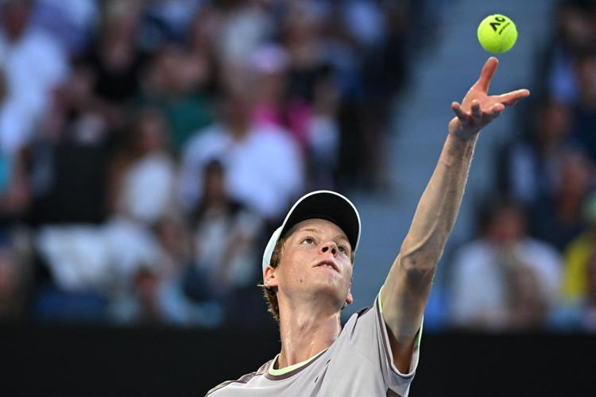

Jannick Sinner
Ha soli 22 anni, ma è gia annoverato tra i più forti tennisti italiani di sempre. Questa settimana
ha conquistato gli
Australian Open, primo Major vinto in singolare maschile da un tennista italiano su una superficie
diversa dalla terra
rossa. Il suo palmares vanta già un titolo Slam, un Masters 1000, quattro ATP 500, sei ATP 250 e una
Coppa Davis.